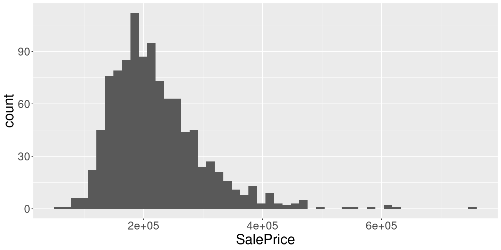
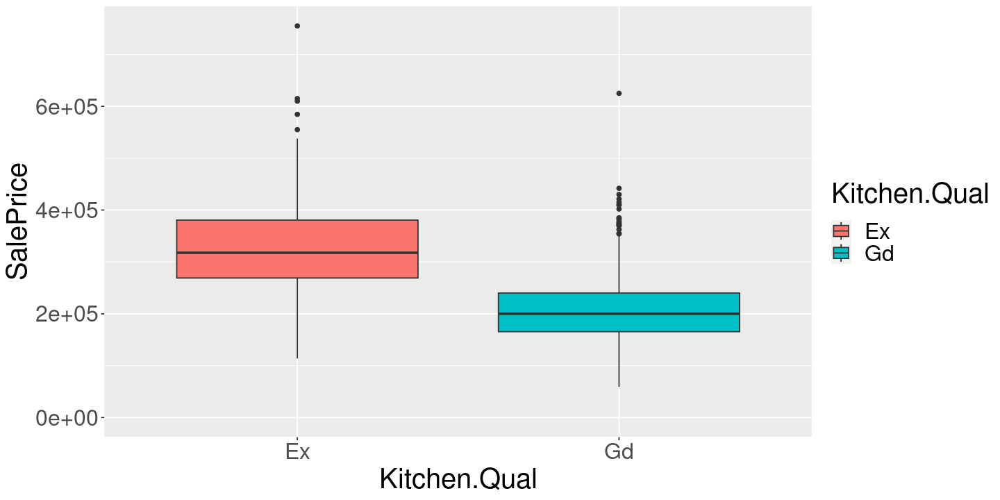
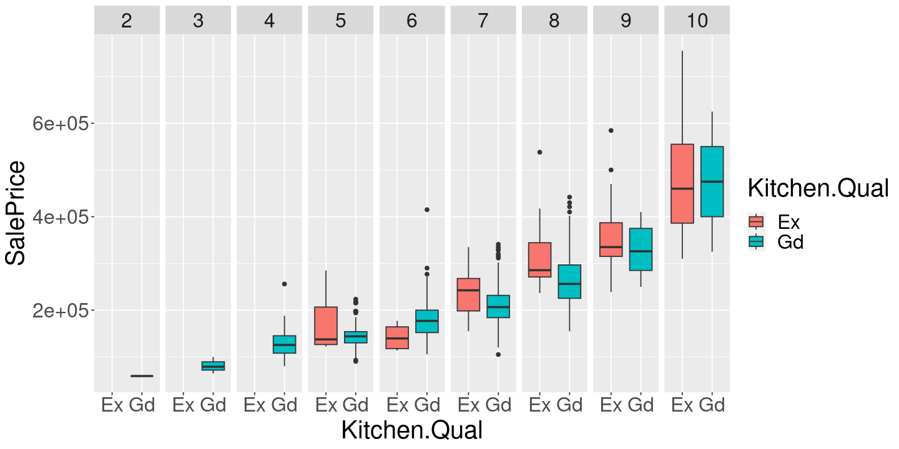
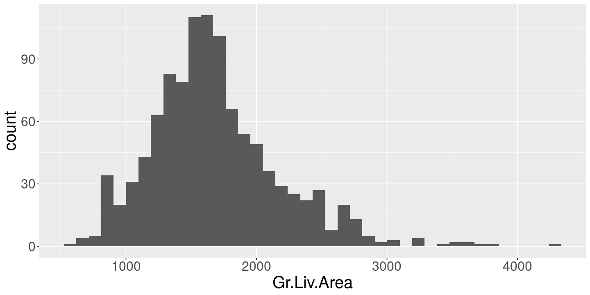
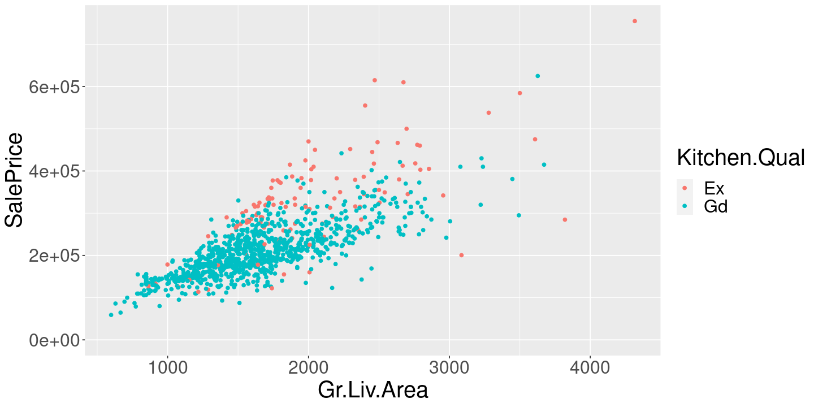
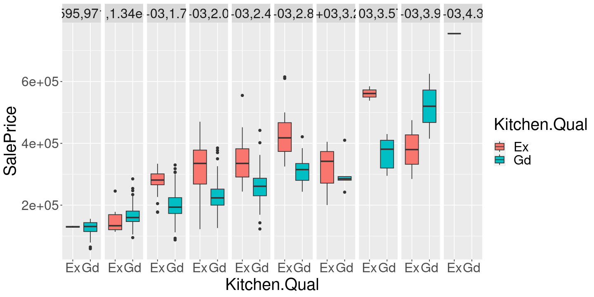
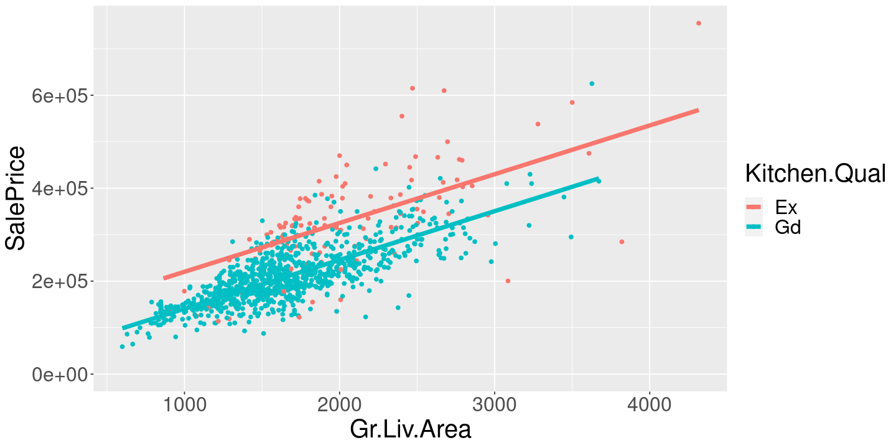
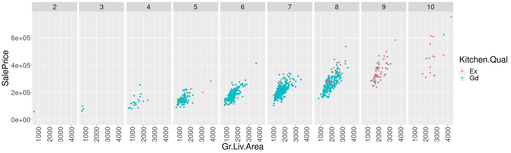

git_repo_dir <- "/home/rgiordan/Documents/git_repos/stat151a"
housing_dir <- file.path(git_repo_dir, "datasets/ames_house/data")
ames_orig <- read.table(file.path(housing_dir, "AmesHousing.txt"), sep="\t", header=T)Multilinear regression with the Ames Housing data
Dataset
We will take a look at the Ames housing data from Veridical Data Science by Yu and Barter. It is also available on the course website in the datasets page. (The original data is on github.)
These are a sample of homes sold in Ames Iowas between 2006 and 2010 as recorded by the city assessor’s office. See the discussion in Chapter 8.4 of VDS..
We will be looking at this data to ask the question: how much might I increase my home’s value by renovating the kitchen?
The dataset lists sale price, as well as different “kitchen quality” measures:
KitchenQual (Ordinal): Kitchen quality
Ex Excellent
Gd Good
TA Typical/Average
Fa Fair
Po PoorWe will follow some of the cleaning suggestions in the VDS book.
We’ll also look only at “good” and “excellent” kitchens, on the assumption that we are upgrading our kitchen from its present “good” condtion to “excellent.”
ames <- ames_orig %>%
filter(Sale.Condition == "Normal",
# remove agricultural, commercial and industrial
!(MS.Zoning %in% c("A (agr)", "C (all)", "I (all)"))) %>%
filter(Kitchen.Qual %in% c("Gd", "Ex")) %>%
mutate(Overall.Qual=factor(Overall.Qual))ggplot(ames) +
geom_histogram(aes(x=SalePrice), bins=50)
Inference
One way we might ask much we increase the home’s value by upgrading the kitchen is to look at the mean sales price for both good and excellent kitchens.
ames %>%
ggplot() +
geom_boxplot(aes(x=Kitchen.Qual, y=SalePrice, fill=Kitchen.Qual))+
expand_limits(y=0)
mean_diff <-
ames %>%
group_by(Kitchen.Qual) %>%
summarize(mean_price=mean(SalePrice)) %>%
pivot_wider(names_from=Kitchen.Qual, values_from=mean_price) %>%
mutate(difference=Ex - Gd)
print(mean_diff)# A tibble: 1 × 3
Ex Gd difference
<dbl> <dbl> <dbl>
1 327007. 207828. 119179.The difference is quite large! Maybe upgrading your kitchen is a great investment.
Viewing the difference of means as a regression
Note that we can compute the same thing with a regression.
reg <- lm(SalePrice ~ Kitchen.Qual - 1, ames)
print(summary(reg))
Call:
lm(formula = SalePrice ~ Kitchen.Qual - 1, data = ames)
Residuals:
Min 1Q Median 3Q Max
-213307 -44953 -7878 35297 427993
Coefficients:
Estimate Std. Error t value Pr(>|t|)
Kitchen.QualEx 327006 6305 51.87 <2e-16 ***
Kitchen.QualGd 207828 2215 93.83 <2e-16 ***
---
Signif. codes: 0 ‘***’ 0.001 ‘**’ 0.01 ‘*’ 0.05 ‘.’ 0.1 ‘ ’ 1
Residual standard error: 67910 on 1054 degrees of freedom
Multiple R-squared: 0.916, Adjusted R-squared: 0.9158
F-statistic: 5747 on 2 and 1054 DF, p-value: < 2.2e-16
What is going on? When we run the regression, R is converting Kitchen.Qual into a binary matrix.
x <- model.matrix(SalePrice ~ Kitchen.Qual - 1, ames)
bind_cols(
select(ames, Kitchen.Qual),
x) %>%
head(, 10)| Kitchen.Qual | Kitchen.QualEx | Kitchen.QualGd | |
|---|---|---|---|
| <chr> | <dbl> | <dbl> | |
| 1 | Gd | 0 | 1 |
| 2 | Ex | 1 | 0 |
| 3 | Gd | 0 | 1 |
| 4 | Gd | 0 | 1 |
| 5 | Gd | 0 | 1 |
| 6 | Gd | 0 | 1 |
We then find the coefficients \(\beta_{ex}\) and \(\beta_{gd}\) that minimizes
\[ \sum_{n=1}^N (y_n - (\beta_{ex} \textrm{Kitchen.QualEx} + \beta_{gd} \textrm{Kitchen.QualGd}))^2 \]
where \(y_n =\)SalePrice.
Exercise: prove that the optimal values, \(\hat\beta_{ex}\) and \(\hat\beta_{gd}\), are just the sample means within their respective categories, e.g.
\[ \hat\beta_{ex} = \frac{1}{N_{ex}} \sum_{n: \textrm{Kitchen.Qual} = \textrm{Ex}} y_n \]
There are a couple ways to get the difference out of R.
predict(reg, data.frame(Kitchen.Qual="Ex")) - predict(reg, data.frame(Kitchen.Qual="Gd"))
1: 119178.513206163
betahat <- coefficients(reg)
diff <- betahat["Kitchen.QualEx"] - betahat["Kitchen.QualGd"]
names(diff) <- NULL
print(diff)[1] 119178.5Here’s one you might not have thought of:
reg2 <- lm(SalePrice ~ Kitchen.Qual + 1, ames)
print(summary(reg2))
Call:
lm(formula = SalePrice ~ Kitchen.Qual + 1, data = ames)
Residuals:
Min 1Q Median 3Q Max
-213307 -44953 -7878 35297 427993
Coefficients:
Estimate Std. Error t value Pr(>|t|)
(Intercept) 327006 6305 51.87 <2e-16 ***
Kitchen.QualGd -119178 6683 -17.83 <2e-16 ***
---
Signif. codes: 0 ‘***’ 0.001 ‘**’ 0.01 ‘*’ 0.05 ‘.’ 0.1 ‘ ’ 1
Residual standard error: 67910 on 1054 degrees of freedom
Multiple R-squared: 0.2318, Adjusted R-squared: 0.2311
F-statistic: 318 on 1 and 1054 DF, p-value: < 2.2e-16
Here, the model includes a constant, which is always 1. Then it includes an encoding vector only for Kitchen.QualGd.
Exercise: Why doesn’t it include one for Kitchen.QualEx?
x <- model.matrix(SalePrice ~ Kitchen.Qual + 1, ames)
bind_cols(
select(ames, Kitchen.Qual),
x) %>%
head(, 10)| Kitchen.Qual | (Intercept) | Kitchen.QualGd | |
|---|---|---|---|
| <chr> | <dbl> | <dbl> | |
| 1 | Gd | 1 | 1 |
| 2 | Ex | 1 | 0 |
| 3 | Gd | 1 | 1 |
| 4 | Gd | 1 | 1 |
| 5 | Gd | 1 | 1 |
| 6 | Gd | 1 | 1 |
predict(reg2, data.frame(Kitchen.Qual="Ex")) - predict(reg2, data.frame(Kitchen.Qual="Gd"))
1: 119178.513206164
One way to interpret this is “what is the effect on sale price of having a good kitchen when controlling for the average home price?”
Controlling for house quality
We also have a measure of overall house quality:
Overall Qual (Ordinal): Rates the overall material and finish of the house
10 Very Excellent
9 Excellent
8 Very Good
7 Good
6 Above Average
5 Average
4 Below Average
3 Fair
2 Poor
1 Very PoorIf we have discovered the “true effect of remodeling your kitchen” then the difference in sales price should not depend on the overall house condition, right? (After all, I haven’t said what my house condition is when I asked the question.) Let’s see.
ames %>%
ggplot() +
geom_boxplot(aes(x=Kitchen.Qual, y=SalePrice, fill=Kitchen.Qual)) +
facet_grid( ~ Overall.Qual)
ames %>%
group_by(Overall.Qual, Kitchen.Qual) %>%
summarize(mean_price=mean(SalePrice), .groups="drop") %>%
pivot_wider(id_cols=Overall.Qual, names_from=Kitchen.Qual, values_from=mean_price) %>%
mutate(difference=Ex - Gd)| Overall.Qual | Gd | Ex | difference |
|---|---|---|---|
| <fct> | <dbl> | <dbl> | <dbl> |
| 2 | 59000.0 | NA | NA |
| 3 | 81100.0 | NA | NA |
| 4 | 132468.4 | NA | NA |
| 5 | 146430.7 | 169931.2 | 23500.598 |
| 6 | 180235.6 | 142425.0 | -37810.618 |
| 7 | 209187.3 | 239900.0 | 30712.678 |
| 8 | 263591.5 | 311165.7 | 47574.197 |
| 9 | 328735.8 | 355043.4 | 26307.578 |
| 10 | 475000.0 | 478246.2 | 3246.154 |
This not only gives a very different answer to our original difference in means, but it even gives surprising answers, such as a negative value for a particular value of overall quality.
Exercise: How can you explain the difference in these results?
How can we compute these separate means as regression?
reg_qual <- lm(SalePrice ~ Overall.Qual : Kitchen.Qual - 1, ames)
print(summary(reg_qual))
Call:
lm(formula = SalePrice ~ Overall.Qual:Kitchen.Qual - 1, data = ames)
Residuals:
Min 1Q Median 3Q Max
-168246 -29701 -4211 22776 276754
Coefficients: (3 not defined because of singularities)
Estimate Std. Error t value Pr(>|t|)
Overall.Qual2:Kitchen.QualEx NA NA NA NA
Overall.Qual3:Kitchen.QualEx NA NA NA NA
Overall.Qual4:Kitchen.QualEx NA NA NA NA
Overall.Qual5:Kitchen.QualEx 169931 16713 10.168 < 2e-16 ***
Overall.Qual6:Kitchen.QualEx 142425 23636 6.026 2.33e-09 ***
Overall.Qual7:Kitchen.QualEx 239900 13646 17.580 < 2e-16 ***
Overall.Qual8:Kitchen.QualEx 311166 9271 33.565 < 2e-16 ***
Overall.Qual9:Kitchen.QualEx 355043 6493 54.679 < 2e-16 ***
Overall.Qual10:Kitchen.QualEx 478246 13111 36.478 < 2e-16 ***
Overall.Qual2:Kitchen.QualGd 59000 47271 1.248 0.21227
Overall.Qual3:Kitchen.QualGd 81100 27292 2.972 0.00303 **
Overall.Qual4:Kitchen.QualGd 132468 10845 12.215 < 2e-16 ***
Overall.Qual5:Kitchen.QualGd 146431 4408 33.219 < 2e-16 ***
Overall.Qual6:Kitchen.QualGd 180236 3286 54.857 < 2e-16 ***
Overall.Qual7:Kitchen.QualGd 209187 2491 83.964 < 2e-16 ***
Overall.Qual8:Kitchen.QualGd 263592 3173 83.083 < 2e-16 ***
Overall.Qual9:Kitchen.QualGd 328736 14253 23.065 < 2e-16 ***
Overall.Qual10:Kitchen.QualGd 475000 33426 14.211 < 2e-16 ***
---
Signif. codes: 0 ‘***’ 0.001 ‘**’ 0.01 ‘*’ 0.05 ‘.’ 0.1 ‘ ’ 1
Residual standard error: 47270 on 1041 degrees of freedom
Multiple R-squared: 0.9598, Adjusted R-squared: 0.9592
F-statistic: 1657 on 15 and 1041 DF, p-value: < 2.2e-16
We can see that the estimates are the same as the means.
Let’s look at the regressor matrix that we’re constructing:
x <- model.matrix(SalePrice ~ Overall.Qual : Kitchen.Qual - 1, ames)
bind_cols(
select(ames, SalePrice, Overall.Qual, Kitchen.Qual),
x) %>%
head(15) %>% t()| 1 | 2 | 3 | 4 | 5 | 6 | 7 | 8 | 9 | 10 | 11 | 12 | 13 | 14 | 15 | |
|---|---|---|---|---|---|---|---|---|---|---|---|---|---|---|---|
| SalePrice | 172000 | 244000 | 195500 | 213500 | 191500 | 236500 | 189000 | 171500 | 212000 | 538000 | 216000 | 184000 | 149900 | 306000 | 275000 |
| Overall.Qual | 6 | 7 | 6 | 8 | 8 | 8 | 7 | 7 | 8 | 8 | 7 | 7 | 6 | 8 | 9 |
| Kitchen.Qual | Gd | Ex | Gd | Gd | Gd | Gd | Gd | Gd | Gd | Ex | Gd | Gd | Gd | Gd | Ex |
| Overall.Qual2:Kitchen.QualEx | 0 | 0 | 0 | 0 | 0 | 0 | 0 | 0 | 0 | 0 | 0 | 0 | 0 | 0 | 0 |
| Overall.Qual3:Kitchen.QualEx | 0 | 0 | 0 | 0 | 0 | 0 | 0 | 0 | 0 | 0 | 0 | 0 | 0 | 0 | 0 |
| Overall.Qual4:Kitchen.QualEx | 0 | 0 | 0 | 0 | 0 | 0 | 0 | 0 | 0 | 0 | 0 | 0 | 0 | 0 | 0 |
| Overall.Qual5:Kitchen.QualEx | 0 | 0 | 0 | 0 | 0 | 0 | 0 | 0 | 0 | 0 | 0 | 0 | 0 | 0 | 0 |
| Overall.Qual6:Kitchen.QualEx | 0 | 0 | 0 | 0 | 0 | 0 | 0 | 0 | 0 | 0 | 0 | 0 | 0 | 0 | 0 |
| Overall.Qual7:Kitchen.QualEx | 0 | 1 | 0 | 0 | 0 | 0 | 0 | 0 | 0 | 0 | 0 | 0 | 0 | 0 | 0 |
| Overall.Qual8:Kitchen.QualEx | 0 | 0 | 0 | 0 | 0 | 0 | 0 | 0 | 0 | 1 | 0 | 0 | 0 | 0 | 0 |
| Overall.Qual9:Kitchen.QualEx | 0 | 0 | 0 | 0 | 0 | 0 | 0 | 0 | 0 | 0 | 0 | 0 | 0 | 0 | 1 |
| Overall.Qual10:Kitchen.QualEx | 0 | 0 | 0 | 0 | 0 | 0 | 0 | 0 | 0 | 0 | 0 | 0 | 0 | 0 | 0 |
| Overall.Qual2:Kitchen.QualGd | 0 | 0 | 0 | 0 | 0 | 0 | 0 | 0 | 0 | 0 | 0 | 0 | 0 | 0 | 0 |
| Overall.Qual3:Kitchen.QualGd | 0 | 0 | 0 | 0 | 0 | 0 | 0 | 0 | 0 | 0 | 0 | 0 | 0 | 0 | 0 |
| Overall.Qual4:Kitchen.QualGd | 0 | 0 | 0 | 0 | 0 | 0 | 0 | 0 | 0 | 0 | 0 | 0 | 0 | 0 | 0 |
| Overall.Qual5:Kitchen.QualGd | 0 | 0 | 0 | 0 | 0 | 0 | 0 | 0 | 0 | 0 | 0 | 0 | 0 | 0 | 0 |
| Overall.Qual6:Kitchen.QualGd | 1 | 0 | 1 | 0 | 0 | 0 | 0 | 0 | 0 | 0 | 0 | 0 | 1 | 0 | 0 |
| Overall.Qual7:Kitchen.QualGd | 0 | 0 | 0 | 0 | 0 | 0 | 1 | 1 | 0 | 0 | 1 | 1 | 0 | 0 | 0 |
| Overall.Qual8:Kitchen.QualGd | 0 | 0 | 0 | 1 | 1 | 1 | 0 | 0 | 1 | 0 | 0 | 0 | 0 | 1 | 0 |
| Overall.Qual9:Kitchen.QualGd | 0 | 0 | 0 | 0 | 0 | 0 | 0 | 0 | 0 | 0 | 0 | 0 | 0 | 0 | 0 |
| Overall.Qual10:Kitchen.QualGd | 0 | 0 | 0 | 0 | 0 | 0 | 0 | 0 | 0 | 0 | 0 | 0 | 0 | 0 | 0 |
Controlling for living area
We might ask the same question about living area. Unfortunately this is now a continuous variable.
ames %>%
ggplot() +
geom_histogram(aes(x=Gr.Liv.Area), bins=40)
It no longer makes sense to look at the difference in means “for a fixed living area,” as you can see by the scatter plot.
ames %>%
ggplot() +
geom_point(aes(x=Gr.Liv.Area, y=SalePrice, color=Kitchen.Qual)) +
expand_limits(y=0)
ames %>%
mutate(LivingAreaBin=cut(Gr.Liv.Area, 10)) %>%
ggplot() +
geom_boxplot(aes(x=Kitchen.Qual, y=SalePrice, fill=Kitchen.Qual)) +
facet_grid( ~ LivingAreaBin)
reg_la <- lm(SalePrice ~ Gr.Liv.Area + Kitchen.Qual, ames)
print(summary(reg_la))
ames %>%
mutate(PredPrice=predict(reg_la, ames)) %>%
ggplot() +
geom_point(aes(x=Gr.Liv.Area, y=SalePrice, color=Kitchen.Qual)) +
geom_line(aes(x=Gr.Liv.Area, y=PredPrice, color=Kitchen.Qual, group=Kitchen.Qual), lwd=2) +
expand_limits(y=0)
Call:
lm(formula = SalePrice ~ Gr.Liv.Area + Kitchen.Qual, data = ames)
Residuals:
Min 1Q Median 3Q Max
-238658 -24841 -2552 23240 240508
Coefficients:
Estimate Std. Error t value Pr(>|t|)
(Intercept) 115200.021 7234.776 15.92 <2e-16 ***
Gr.Liv.Area 104.977 2.912 36.05 <2e-16 ***
Kitchen.QualGd -79532.676 4606.565 -17.27 <2e-16 ***
---
Signif. codes: 0 ‘***’ 0.001 ‘**’ 0.01 ‘*’ 0.05 ‘.’ 0.1 ‘ ’ 1
Residual standard error: 45460 on 1053 degrees of freedom
Multiple R-squared: 0.6561, Adjusted R-squared: 0.6555
F-statistic: 1005 on 2 and 1053 DF, p-value: < 2.2e-16

Taking this seriously, we might estimate that the coefficient on Kitchen.QualGd tells us the answer to our question. But the modeling assumptions to not look reasonable. Note, for example, the particularly bad fit of the Ex line for low living area houses.
Controlling for too much
Furthermore, we can even further subdivide and try to “control” for overall quality and living area simultaneously. This is probably closer to what we actually want, but we have real problems with data sparsity now.
options(repr.plot.width=20, repr.plot.height=6)
ames %>%
ggplot() +
geom_point(aes(x=Gr.Liv.Area, y=SalePrice, color=Kitchen.Qual)) +
facet_grid( ~ Overall.Qual) +
expand_limits(y=0) +
theme(axis.text.x = element_text(angle = 90, vjust = 0.5, hjust=1))
options(repr.plot.width=12, repr.plot.height=6)
This is getting difficult. What about a linear model?
big_reg <-
lm(SalePrice ~ Gr.Liv.Area + Kitchen.Qual + Overall.Qual, ames)
print(summary(big_reg))
Call:
lm(formula = SalePrice ~ Gr.Liv.Area + Kitchen.Qual + Overall.Qual,
data = ames)
Residuals:
Min 1Q Median 3Q Max
-143175 -19875 -1192 18301 150483
Coefficients:
Estimate Std. Error t value Pr(>|t|)
(Intercept) 32630.906 34316.248 0.951 0.34188
Gr.Liv.Area 77.251 2.451 31.524 < 2e-16 ***
Kitchen.QualGd -19904.252 4506.865 -4.416 1.11e-05 ***
Overall.Qual3 12932.882 39229.663 0.330 0.74171
Overall.Qual4 17359.803 34900.926 0.497 0.61901
Overall.Qual5 35439.120 34151.188 1.038 0.29964
Overall.Qual6 49218.494 34127.289 1.442 0.14954
Overall.Qual7 65443.802 34124.965 1.918 0.05541 .
Overall.Qual8 107153.925 34189.871 3.134 0.00177 **
Overall.Qual9 167573.989 34581.308 4.846 1.45e-06 ***
Overall.Qual10 241076.614 35627.832 6.767 2.19e-11 ***
---
Signif. codes: 0 ‘***’ 0.001 ‘**’ 0.01 ‘*’ 0.05 ‘.’ 0.1 ‘ ’ 1
Residual standard error: 33970 on 1045 degrees of freedom
Multiple R-squared: 0.8094, Adjusted R-squared: 0.8075
F-statistic: 443.7 on 10 and 1045 DF, p-value: < 2.2e-16
One way to interpret this is via making predictions for a given house, one with a renovated kitchen and one without.
sample_house <-
filter(ames, Kitchen.Qual == "Gd") %>%
sample_n(1)
sample_house_reno <- sample_house %>% mutate(Kitchen.Qual="Ex")
predict(big_reg, sample_house_reno) - predict(big_reg, sample_house)
1: 19904.2518250824
Of course, the problem is that we may get different answers depending on what regression we run:
lm(SalePrice ~ Gr.Liv.Area + Kitchen.Qual, ames) %>%
summary()
Call:
lm(formula = SalePrice ~ Gr.Liv.Area + Kitchen.Qual, data = ames)
Residuals:
Min 1Q Median 3Q Max
-238658 -24841 -2552 23240 240508
Coefficients:
Estimate Std. Error t value Pr(>|t|)
(Intercept) 115200.021 7234.776 15.92 <2e-16 ***
Gr.Liv.Area 104.977 2.912 36.05 <2e-16 ***
Kitchen.QualGd -79532.676 4606.565 -17.27 <2e-16 ***
---
Signif. codes: 0 ‘***’ 0.001 ‘**’ 0.01 ‘*’ 0.05 ‘.’ 0.1 ‘ ’ 1
Residual standard error: 45460 on 1053 degrees of freedom
Multiple R-squared: 0.6561, Adjusted R-squared: 0.6555
F-statistic: 1005 on 2 and 1053 DF, p-value: < 2.2e-16Prediction
What if we just asked a different question: can we predict the cost of a house using kitchen quality?
ames %>%
ggplot() +
geom_boxplot(aes(x=Kitchen.Qual, y=SalePrice, fill=Kitchen.Qual))+
expand_limits(y=0)
all_rows <- 1:nrow(ames)
train_rows <- sample(all_rows, floor(nrow(ames) / 2), replace=FALSE)
test_rows <- setdiff(all_rows, train_rows)
print(length(train_rows) / nrow(ames)) # Sanity check
ames_train <- ames[train_rows, ][1] 0.5means_df <-
ames_train %>%
group_by(Overall.Qual, Kitchen.Qual) %>%
summarize(mean_price=mean(SalePrice), .groups="drop")
overall_mean <- mean(ames_train$SalePrice)
print(means_df)
print(overall_mean)# A tibble: 15 × 3
Overall.Qual Kitchen.Qual mean_price
<fct> <chr> <dbl>
1 2 Gd 59000
2 3 Gd 79000
3 4 Gd 119375
4 5 Ex 186567.
5 5 Gd 145680.
6 6 Ex 152000
7 6 Gd 180786.
8 7 Ex 237000
9 7 Gd 207547.
10 8 Ex 340378.
11 8 Gd 263649.
12 9 Ex 355400
13 9 Gd 280667.
14 10 Ex 427958.
15 10 Gd 475000
[1] 219703.6ames_test <-
ames[test_rows, ] %>%
select(SalePrice, Overall.Qual, Kitchen.Qual) %>%
inner_join(means_df, by=c("Overall.Qual", "Kitchen.Qual")) %>% # Note: drops missing values!
mutate(err_pred=SalePrice - mean_price, err_base=SalePrice - overall_mean) %>%
summarize(rmse_pred=sqrt(mean(err_pred^2)), rmse_base=sqrt(mean(err_base^2)))
print(ames_test) rmse_pred rmse_base
1 49917.46 79545.31Exercise: When we’re doing prediction, do we care whether or not we have found the “true” cost effect of renovating your kitchen?